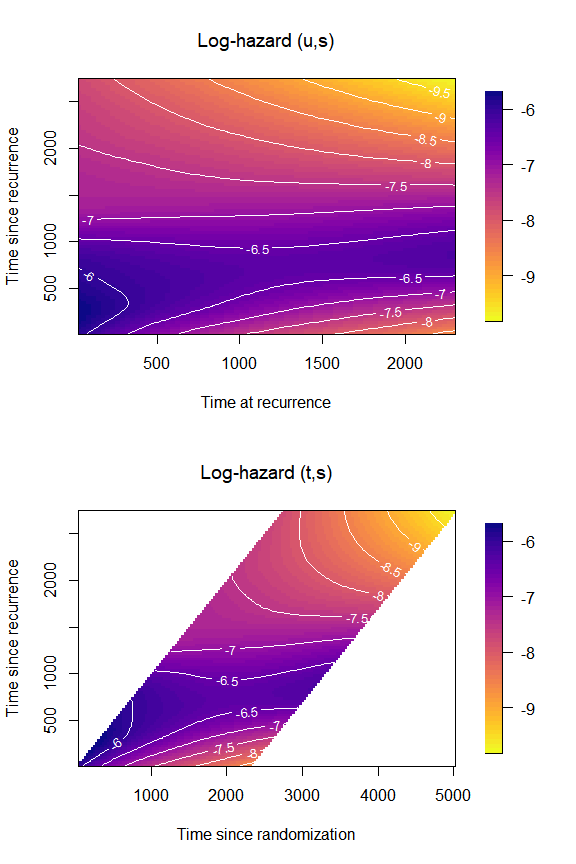

December 2024 Top 40 New CRAN Packages
new packages made CRAN’s final cut in . Here are my Top 40 picks in nineteen categories: Botany, Climate Analysis, Computational Methods, Data, Ecology, Education, Environment, Epidemiology, Genomics, Health Technology Assessment, Machine Learning, Mathematics, Medicine, Networks, Pharma, Statistics, Time Series, Utilities, and Visualization.
Agriculture
pacu v0.1.44: Provides support for a variety of commonly used precision data science agriculture operations including functions to download and process raw satellite images from Sentinel-2, functions to download vegetation index statistics for a given period of time, without the need to download the raw images, and functions to visualize weather data in a historical context. There are five vignettes including an Introduction, Satellite data and Weather data.
Biology
moRphomenes v1.0.3: Provides tools to extend geometric morphometric principles, Mitteroecker & Gunz (2009) to the study of non-physical structures, hormone profiles, as outlined in Ehrlich et al (2021) and includes a shiny app for data exploration
SunCalMeeus v0.1.2: Provides functions to compute the position of the sun, and local solar time using Meeus’ formulae and compute day and/or night length using different twilight definitions or arbitrary sun elevation angles. This package is part of the `r4photobiology suite described in Aphalo, P. J. (2015). There is a User Guide for the package and a guide for the R for Photobiology suite.
Climate Analysis
Computational Methods
moonboot v0.9.1: Implements the m-out-of-n bootstrap suggested by Politis and Romano (1994) for subsampling size m. See [Dalitz and Lögler (2024)]https://arxiv.org/abs/2412.05032) for package details.
RapidFuzz v1.0: Provides a high-performance interface for calculating string similarities and distances, leveraging the efficient C++ library RapidFuzz. See README to get started.
Data
GHCNr v1.4.5: Provides an interface to the Global Historical Climatology Network daily (GHCNd) database which contains daily summaries of weather station data worldwide. GHCNd is accessed through the web API which premits downloading, filtering, and to aggregation at montly and annual scales. See the vignette.
OncoDataSets v0.1.0: Offers a rich collection of data focused on cancer research, covering survival rates, genetic studies, biomarkers, and epidemiological insights and and includes datasets on various cancer types such as melanoma, leukemia, breast, ovarian, and lung cancer, among others. See the vignette
spanishoddata v0.1.0: Provides access to origin-destination (OD) data from the Spanish Ministry of Transport and proides features to simplify the management of large datasets and process them with a duckdb interface. Extensive documentation is available here. There are four vignettes including Quickly get daily data.

Ecology
Education
Environment
Epidemiology
BayesianFitForecast v1.0.0: Implements methods for Bayesian parameter estimation and forecasting in epidemiological models. Functions enable model fitting using Bayesian methods and generate forecasts with uncertainty quantification. See Karami et al. (2024) and [Grinsztajn et al. (2021])](https://onlinelibrary.wiley.com/doi/10.1002/sim.9164) for details and the vignette to get started.
Genomics
sffdr v1.0.0: Provides suffogate functional false discovery rates for genome-wide association studies and provides estimates of key FDR quantities in a significance analysis such as the functional local FDR and q-value, and uses these estimates to derive a functional p-value for type I error rate control and a functional local Bayes’ factor for post-GWAS analyses. See Bass and Wallace (2024) for details and the vignette vor an example.
[TransProR]https://cran.r-project.org/package=TransProR) v0.0.6: Implements tools for transcriptomic data analysis, with a focus on transcript-level data preprocessing, expression profiling, differential expression analysis, and functional enrichment that enables researchers to identify key biological processes, disease biomarkers, and gene regulatory mechanisms. Differential expression analysis methods incorporated in the package include limma Ritchie et al. (2015), Smyth (2005), edgeR Robinson et al. (2010), DESeq2 Love et al. (2014), and Wilcoxon tests Li et al. (2022) An e-book providing extensive documentation is available here.
[].png){fig-alt=““}
Healthcare
Health Technology Assessment
[].png){fig-alt=““}
Machine Learning
FlexRL v0.1.0: Implements the Stochastic Expectation Maximisation (StEM) approach to Record Linkage described in Robach et al. (2024) for finding the common set of records among 2 data sources based on partially identifying variables including those such as postal code) that may evolve over time. See the vignette.
wordvector v0.2.0: Create dense vector representation of words and documents using quanteda, currently implements Word2vec (Mikolov et al. (2013)) and Latent Semantic Analysis (Deerwester et al. (1990)). Look here to get started.
owing model test results”}
Mathematics
Medicine
Networks
tna v0.3.0: Provides tools for performing Transition Network Analysis (TNA) to study relational dynamics, including functions for building and plotting TNA models, calculating centrality measures, and identifying dominant events and patterns. See Saqr et al. (2024) for details on TNA. There is a Getting Started Guide and ttwo additional vignettes with examples.
Pharma
Statistics
catalytic v0.1.0: Catalytic prior distributions which integrate observed data with synthetic data generated from a simpler model’s predictive distributions may improve estimation accuracy and stability in statistical modeling. See Huang et al. (2020) and Li and Huang (202) for background and the vignettes catalytic_cox, catalytic_glm_binomial, and catalytic_glm_gaussian.
gfoRmulaICE v0.1.0: Implements iterative conditional expectation (ICE) estimators of the plug-in g-formula as described in Wen et al. (2020) enabling estimates of survival curves under sustained treatment strategies (interventions) using longitudinal data with time-varying treatments, time-varying confounders, censoring, and competing events. See README for examples.
greta.gam v0.3.0: Implements a greta, Golding (2019) module that provides mgcv smoother functions and formula syntax to define smooth terms for use in a greta model. Users can define their own likelihood to complete the model and fit it by Markov Chain Monte Carlo (MCMC). See the vignette.
multvardiv Prvovides functions for the multivariate generalized Gaussian distribution, multivariate Cauchy distribution, multivariate t distribution and for computing the distance between two distributions. See Bouhlel and Dziri (2019), Bouhlel and Rousseau (2022), Bouhlel and Rousseau (2023) for background.
recforest v1.0.0: Extends the random survival forest algorithm by adapting splitting rules and node estimators to handle complexities of recurrent events and enables the analysis of recurrent events with right-censored data and the potential presence of a terminal event. See Murris et al. (2024) for the theory and the two vignettes method and predict for examples.
TwoTimeScales v1.0.0: Provides functions to analyze time-to-event data with two time scales by estimating a smooth hazard that varies over two time scales and also, including functions to prepare the raw data, estimate and plot the two-dimensional smooth hazard. See Carollo et al. (2024) for the theory. There are four vignettes including Introduction and Vizualize hazards.

Time Series
bridgr v0.1.1: Implements bridge models for nowcasting and forecasting macroeconomic variables by linking high-frequency indicator variables (e.g., monthly data) to low-frequency target variables (e.g., quarterly GDP). See Baffigi et al. (2004), Burri (2023) or Schumacher (2016) for background and README to get started.
Utilities
cpp11qpdf v1.3.5: Provides tools to split, combine, and compress PDF files using qpdf, an open-source PDF rendering library that enables content-preserving transformations of PDF files. See the vignette.
doParabar v1.0.2: Provides a foreach parallel adapter for parabar backends enabling users to run foreach loops in parallel while leveraging the parallel and progress-tracking capabilities of the parabar package. Look here for documentation.
fasterRaste v8.4.0.3: Processing of large-in-memory/large-on disk rasters and spatial vectors using the stand-alone version of GRASS GIS. There are seven vignettes including Getting Started and Making fasterRaster faster.
iso8601 v0.1.2: Provides functions to parse strings with ISO8601 dates, times, and date-times into R-objects, and determine the type of string and to standardise ISO8601 strings. Look here for examples.
pipeflow v0.2.2: Implements a lightweight framework for building robust data analysis pipelines. Users initialize a pipeline with a dataset and construct workflows step by step by adding R functions. Steps can be modified, removed, or inserted at any stage. There are six vignettes including Getting started and How pipllines can modify themselves at runtime.
tablespan v0.1.7 Prvides functions to create “good enough” tables that can be exported to Excel, HTML, LaTeX, and RTF. Look here for an introduction.

tinylens v0.1.0: Provides functions whach are based on the lenses package and the Haskell lens package to create and use lenses for manipulating deeply nested data structures.
Visualization
ggid v0.1.0: Streamlines exploratory data analysis by providing a turnkey approach to visualising n-dimensional data which graphically reveals correlative or associative relationships between 2 or more features. Represents all dataset features as distinct, vertically aligned bar or tile plots, with plot types auto-selected based on whether variables are categorical or numeric. Look here for examples.

[].png){fig-alt=““}